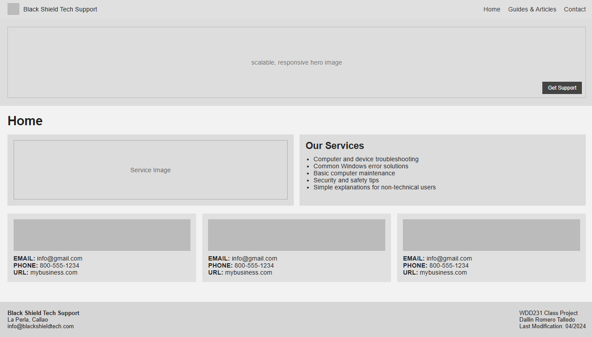

Website Site Plan: Technical Support
Site Name
Black Shield Tech Support — This website represents an
individual technical support service focused on helping users solve common
computer and device problems in a simple and clear way.
Domain availability (optional):
blackshieldtech.com
Purpose of the Site
The purpose of this site is to provide useful information and practical
solutions to common technical issues, especially for users with little
technical experience. The website will offer guidance, tutorials, and
direct support to help users maintain and troubleshoot their devices.
Scenarios
- How can I fix common Windows errors on my computer?
- Where can I find basic maintenance and security tips for my device?
- How can I contact technical support for personal assistance?
Color Scheme
-
Black (#0F0F0F): used for headers and main accents to
match the logo and convey professionalism.
-
Dark Gray (#2E2E2E): used for secondary text and borders.
-
Light Gray (#F4F4F4): used as the background color for
clarity and readability.
-
White (#FFFFFF): used for content areas and contrast.
Typography
-
Roboto: used for body text because it is clean and easy
to read for all users.
-
Montserrat: used for headings to create a modern and
technical feel.
Pages Description
-
Home: Introduces the technical support service and
explains the type of help offered.
-
Guides & Articles: Provides tutorials and information
about common computer problems, maintenance, and security tips.
-
Contact: Allows users to send questions or request
technical assistance.
Wireframe Diagram
Below is a simple wireframe sketch showing the layout of the homepage for
both mobile and desktop views.
Mobile and Desktop View
